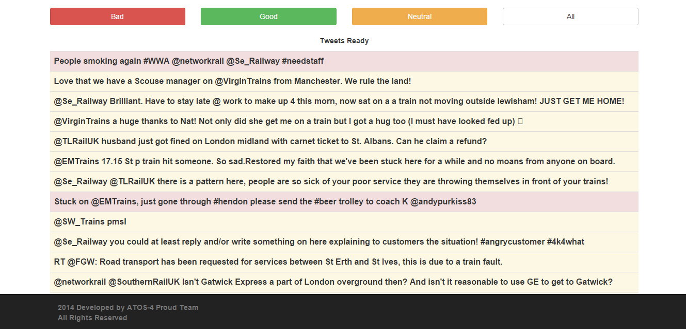
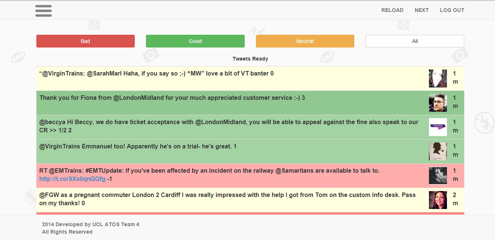

Atos is focused on business technology that powers progress and helps organisations to create their firm of the future. With its deep technology expertise and industry knowledge, the Group works with clients across different business sectors: Defence, Financial Services, Health, Manufacturing, Media and Utilities, Public Sector, Retail, Telecommunications and Transportation. With Transportation being one of its sectors, it ensures welfare of the railways services with an aim to make travelling by train easier for customers. This includes everything from entering the station to finding a place in the desired train. They are now looking for a new approach and try to refresh their services in order to make them better. This is where we come in.
The aim of our project is to analyze some of the most important social media platforms (Facebook, Twitter etc.) for possible feedback from the customers in real time. Using the feedback that we will find regarding some issues in the station or in the trains we will then in turn enable responsible people to solve the issues. Train operating companies and Network Rail monitor social media (predominantly Facebook and Twitter) as a way of managing customer satisfaction. The greatest success with this approach is when the information can be acted upon quickly. For example, a passenger complains on Twitter that their train is not showing a platform and 30 seconds later the platform is posted and there is a response on Twitter detailing the action that has been taken. The challenge is how to route the information available on Twitter and Facebook rapidly to the correct people and/or system(s) that are able to take the appropriate corrective action.The aim of this project is to develop a product that can be configured to automatically route social media activity to the most appropriate people and/or system(s) to enable a fast response. A possible further extension is to allow the person/system that actions a response to reply to the original reporter with details of the action that was taken. Another possible extension is the provision of a dashboard that shows an analysis of activity in social media channels in real time including a summary of which have been routed for action and which have been actioned.
The application we have build as a large variety of features. Of course, its primary goal is to fetch tweets and display them according to the sentiment within the tweets. The backhand algorithm is doing that using a dynamical scoring sysetm which enables us to display the score for each tweet on the screen. By using the score, we can also determine which tweets are "worse" among 2 bad tweets, for example. Also, there is a settings button which enables the user to select what hashtags(#) he wants the app to look for on Twitter. The user can use the settings to update the database automatically and thus, if two users access it from two different computers, the change will stand. When a users logs in, 100 tweets are printed straight-away. If the user desires to see more than 100 tweets or earlier one, he can use the NEXT button which was implemented. Also, if a refresh is needed in order to see the latest tweets, the user can elect to do this by simply pressing the RELOAD button. Last but not least, all the selected tweets cand be rendered by sentiment if the user wants to see the neutral/good or bad tweets only.
In order for the project to be a success, we should:
After the success we had in the first term with the product, we kept on working hard in order to deliver a fully-developed application. Here is a little proof on how much we have been working during this year:
|  | -----------> |  |
As you can see, many aspects of the app have changed. We managed to achieve all the tasks we have been asked to both us and our client consider this was a successful colaboration.